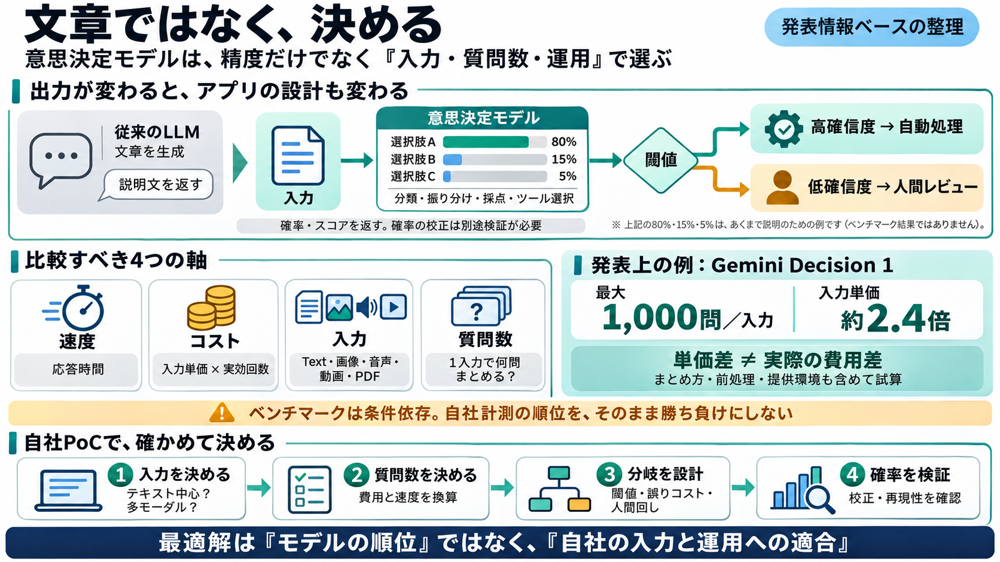

Gemini Decision 1: Price, Benchmarks and Limits | CellCog
### Q4How does Gemini Decision 1 compare with Jev? In Google’s own benchmark table it beats Jev 1.14 on five of seven s…

### Q4How does Gemini Decision 1 compare with Jev? In Google’s own benchmark table it beats Jev 1.14 on five of seven s…
| Measure | Gemini Decision 1 | Jev 1.14 | --- | JevBench accuracy | 92.2% | 90.0% | | When2Call accuracy | 79.9% | 82…
Gemini Decisions APIではテキスト、画像、音声、動画、PDFにまたがる1つのマルチモーダル入力(最大256Kトークン)と、最大1000個の独立した質問を渡すことができます。回答テキストをトークン単位で生成する代わりに、Ge…
### 5. Safety A decision model should recognize harmful requests without needlessly blocking harmless ones. We tested M…
大規模モデルのプロバイダーに高額なAPI使用料を支払わざるを得ない競合他社とは異なり、MicrosoftはOpenAIとの深い提携を通じて、アーキテクチャ・レベルでほぼゼロコストのモデル・アクセスを実現している。この「目に見えない免税クーポ…